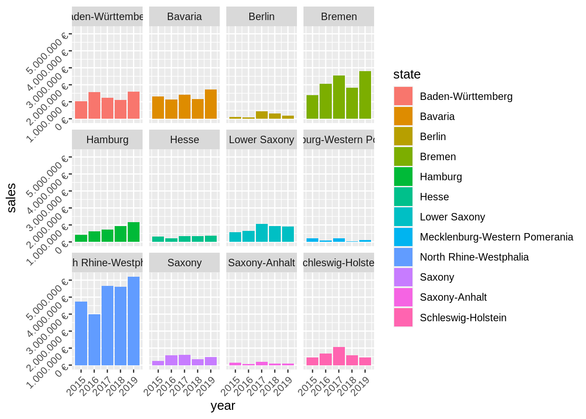
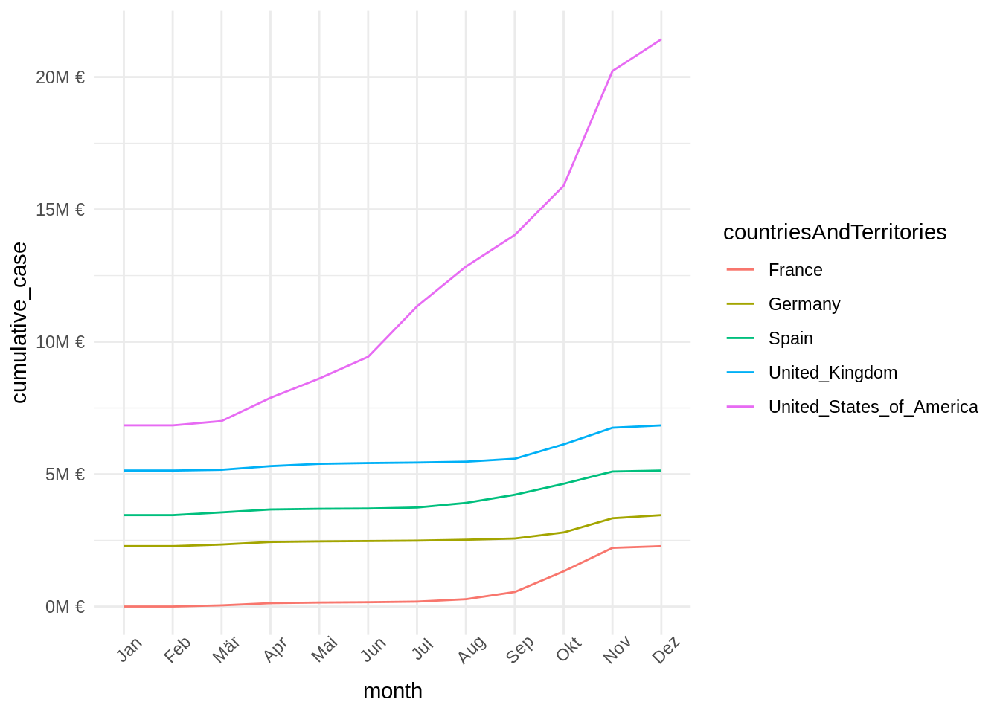

Last compiled: 2020-12-05
Analyze the sales by location (state) with a bar plot. Since state and city are multiple features (variables), they should be split. Which state has the highes revenue?
library(tidyverse)
library(readxl)bikes_tbl <- readxl::read_excel("./00_data/01_bike_sales/01_raw_data/bikes.xlsx")
orderlines_tbl <- readxl::read_excel("./00_data/01_bike_sales/01_raw_data/orderlines.xlsx")
bikeshops_tbl <- readxl::read_excel("./00_data/01_bike_sales/01_raw_data/bikeshops.xlsx")bikeshops_tbl## # A tibble: 30 x 5
## bikeshop.id name location lat lng
## <dbl> <chr> <chr> <dbl> <dbl>
## 1 1 Zum Goldenen Lenker Berlin, Berlin 52.5 13.4
## 2 2 AlexandeRad Hamburg, Hamburg 53.6 10.0
## 3 3 Fahrradladen 16 Munich, Bavaria 48.2 11.6
## 4 4 Bikestation Köln Cologne, North Rhine-Westphalia 50.9 6.95
## 5 5 Montimare Frankfurt, Hesse 50.1 8.68
## 6 6 fahrschneller Stuttgart, Baden-Württemberg 48.8 9.18
## 7 7 Rad Ab Düsseldorf, North Rhine-Westph… 51.2 6.79
## 8 8 Lucky Bike Dortmund, North Rhine-Westphal… 51.5 7.47
## 9 9 Zweirad-Center Stadl… Essen, North Rhine-Westphalia 51.5 7.01
## 10 10 WITT-RAD Bremen, Bremen 53.1 8.83
## # … with 20 more rowsorderlines_tbl## # A tibble: 15,644 x 7
## ...1 order.id order.line order.date customer.id product.id quantity
## <chr> <dbl> <dbl> <dttm> <dbl> <dbl> <dbl>
## 1 1 1 1 2015-01-07 00:00:00 2 2681 1
## 2 2 1 2 2015-01-07 00:00:00 2 2411 1
## 3 3 2 1 2015-01-10 00:00:00 10 2629 1
## 4 4 2 2 2015-01-10 00:00:00 10 2137 1
## 5 5 3 1 2015-01-10 00:00:00 6 2367 1
## 6 6 3 2 2015-01-10 00:00:00 6 1973 1
## 7 7 3 3 2015-01-10 00:00:00 6 2422 1
## 8 8 3 4 2015-01-10 00:00:00 6 2655 1
## 9 9 3 5 2015-01-10 00:00:00 6 2247 1
## 10 10 4 1 2015-01-11 00:00:00 22 2408 1
## # … with 15,634 more rowsbikes_tbl## # A tibble: 231 x 9
## bike.id model model.year frame.material weight price category gender url
## <dbl> <chr> <dbl> <chr> <dbl> <dbl> <chr> <chr> <chr>
## 1 2875 Aeroa… 2020 carbon 7.6 4579 Road - … unisex https:…
## 2 2873 Aeroa… 2020 carbon 7.27 6919 Road - … unisex https:…
## 3 2874 Aeroa… 2020 carbon 7.1 6429 Road - … unisex https:…
## 4 2876 Aeroa… 2020 carbon 7.73 5069 Road - … unisex https:…
## 5 2877 Aeroa… 2020 carbon 7.83 3609 Road - … unisex https:…
## 6 2225 Aeroa… 2019 carbon 6.8 6139 Road - … unisex https:…
## 7 2091 Aeroa… 2019 carbon 6.8 5359 Road - … unisex https:…
## 8 2086 Aeroa… 2021 carbon 7.6 2629 Road - … unisex https:…
## 9 2088 Aeroa… 2020 carbon 7.3 3699 Road - … unisex https:…
## 10 2120 Aeroa… 2020 carbon 7.2 3219 Road - … female https:…
## # … with 221 more rowsbike_orderlines_joined_tbl <- orderlines_tbl %>%
dplyr::left_join(bikes_tbl, by = c("product.id" = "bike.id")) %>%
dplyr::left_join(bikeshops_tbl, by = c("customer.id" = "bikeshop.id"))
bike_orderlines_joined_tbl %>% glimpse()## Rows: 15,644
## Columns: 19
## $ ...1 <chr> "1", "2", "3", "4", "5", "6", "7", "8", "9", "10", "11…
## $ order.id <dbl> 1, 1, 2, 2, 3, 3, 3, 3, 3, 4, 5, 5, 5, 5, 6, 6, 6, 6, …
## $ order.line <dbl> 1, 2, 1, 2, 1, 2, 3, 4, 5, 1, 1, 2, 3, 4, 1, 2, 3, 4, …
## $ order.date <dttm> 2015-01-07, 2015-01-07, 2015-01-10, 2015-01-10, 2015-…
## $ customer.id <dbl> 2, 2, 10, 10, 6, 6, 6, 6, 6, 22, 8, 8, 8, 8, 16, 16, 1…
## $ product.id <dbl> 2681, 2411, 2629, 2137, 2367, 1973, 2422, 2655, 2247, …
## $ quantity <dbl> 1, 1, 1, 1, 1, 1, 1, 1, 1, 1, 1, 2, 1, 1, 1, 1, 1, 1, …
## $ model <chr> "Spectral CF 7 WMN", "Ultimate CF SLX Disc 8.0 ETAP", …
## $ model.year <dbl> 2021, 2020, 2021, 2019, 2020, 2020, 2020, 2021, 2020, …
## $ frame.material <chr> "carbon", "carbon", "carbon", "carbon", "aluminium", "…
## $ weight <dbl> 13.80, 7.44, 14.06, 8.80, 11.50, 8.80, 8.20, 8.85, 14.…
## $ price <dbl> 3119, 5359, 2729, 1749, 1219, 1359, 2529, 1559, 3899, …
## $ category <chr> "Mountain - Trail - Spectral", "Road - Race - Ultimate…
## $ gender <chr> "female", "unisex", "unisex", "unisex", "unisex", "uni…
## $ url <chr> "https://www.canyon.com/en-de/mountain-bikes/trail-bik…
## $ name <chr> "AlexandeRad", "AlexandeRad", "WITT-RAD", "WITT-RAD", …
## $ location <chr> "Hamburg, Hamburg", "Hamburg, Hamburg", "Bremen, Breme…
## $ lat <dbl> 53.57532, 53.57532, 53.07379, 53.07379, 48.78234, 48.7…
## $ lng <dbl> 10.015340, 10.015340, 8.826754, 8.826754, 9.180819, 9.…bike_orderlines_wrangled_tbl <- bike_orderlines_joined_tbl %>%
tidyr::separate(col = location,
into = c("city", "state"),
sep = ", ") %>%
dplyr::mutate(total_price = price * quantity) %>%
dplyr::select(order.id, contains("order"), city, state, quantity, total_price, everything()) %>%
rename(bikeshop = name) %>%
magrittr::set_names(names(.) %>% stringr::str_replace_all("\\.", "_"))
bike_orderlines_wrangled_tbl## # A tibble: 15,644 x 21
## order_id order_line order_date city state quantity total_price
## <dbl> <dbl> <dttm> <chr> <chr> <dbl> <dbl>
## 1 1 1 2015-01-07 00:00:00 Hamb… Hamb… 1 3119
## 2 1 2 2015-01-07 00:00:00 Hamb… Hamb… 1 5359
## 3 2 1 2015-01-10 00:00:00 Brem… Brem… 1 2729
## 4 2 2 2015-01-10 00:00:00 Brem… Brem… 1 1749
## 5 3 1 2015-01-10 00:00:00 Stut… Bade… 1 1219
## 6 3 2 2015-01-10 00:00:00 Stut… Bade… 1 1359
## 7 3 3 2015-01-10 00:00:00 Stut… Bade… 1 2529
## 8 3 4 2015-01-10 00:00:00 Stut… Bade… 1 1559
## 9 3 5 2015-01-10 00:00:00 Stut… Bade… 1 3899
## 10 4 1 2015-01-11 00:00:00 Augs… Bava… 1 6629
## # … with 15,634 more rows, and 14 more variables: `___1` <chr>,
## # customer_id <dbl>, product_id <dbl>, model <chr>, model_year <dbl>,
## # frame_material <chr>, weight <dbl>, price <dbl>, category <chr>,
## # gender <chr>, url <chr>, bikeshop <chr>, lat <dbl>, lng <dbl>Creating relevant tables and using gglpot2 package for data visualization.
sales_by_states_tbl <- bike_orderlines_wrangled_tbl %>%
select(order_date, total_price, state) %>%
mutate(year = year(order_date)) %>%
group_by(year, state) %>%
summarise(sales = sum(total_price)) %>%
ungroup() %>%
mutate(sales_text = scales::dollar(sales, big.mark = ".",
decimal.mark = ",",
prefix = "",
suffix = " €"))
sales_by_states_tbl## # A tibble: 60 x 4
## year state sales sales_text
## <dbl> <chr> <dbl> <chr>
## 1 2015 Baden-Württemberg 1031924 1.031.924 €
## 2 2015 Bavaria 1301461 1.301.461 €
## 3 2015 Berlin 95853 95.853 €
## 4 2015 Bremen 1395912 1.395.912 €
## 5 2015 Hamburg 423090 423.090 €
## 6 2015 Hesse 308609 308.609 €
## 7 2015 Lower Saxony 584386 584.386 €
## 8 2015 Mecklenburg-Western Pomerania 222003 222.003 €
## 9 2015 North Rhine-Westphalia 3735092 3.735.092 €
## 10 2015 Saxony 238371 238.371 €
## # … with 50 more rowssales_by_states_tbl %>%
ggplot2::ggplot(aes(x = year, y = sales, fill = state)) +
ggplot2::geom_col() +
ggplot2::facet_wrap(~ state) +
ggplot2::scale_y_continuous(labels = scales::dollar_format(big.mark = ".",
decimal.mark = ",",
prefix = "",
suffix = " €")) +
ggplot2::theme(axis.text = element_text(angle = 45, hjust = 1))
ggplot2::labs(title = "Sales by states")## $title
## [1] "Sales by states"
##
## attr(,"class")
## [1] "labels"Get some data via an API. There are millions of providers, that offer API access for free and have good documentation about how to query their service. You just have to google them. You can use whatever service you want. For example, you can get data about your listening history (spotify), get data about flights (skyscanner) or just check the weather forecast.
Scrape one of the competitor websites of canyon (either https://www.rosebikes.de/ or https://www.radon-bikes.de) and create a small database. The database should contain the model names and prices for at least one category. Use the selectorgadget to get a good understanding of the website structure. For the challenge a) I am going use Rick and Morty API from https://rickandmortyapi.com.
library(tidyverse)
sw_api <- function(weatherUrl) {
resp <- httr::GET(weatherUrl)
httr::stop_for_status(resp) # automatically throws an error if a request did not succeed
}
resp <- sw_api("https://api.openweathermap.org/data/2.5/onecall?lat=53.5511&lon=9.9937&appid=d93321800837c9ff4a16acd678b13513")
resp## Response [https://api.openweathermap.org/data/2.5/onecall?lat=53.5511&lon=9.9937&appid=d93321800837c9ff4a16acd678b13513]
## Date: 2020-12-05 19:23
## Status: 200
## Content-Type: application/json; charset=utf-8
## Size: 18.7 kBrawToChar(resp$content)## [1] "{\"lat\":53.55,\"lon\":9.99,\"timezone\":\"Europe/Berlin\",\"timezone_offset\":3600,\"current\":{\"dt\":1607196180,\"sunrise\":1607152775,\"sunset\":1607180541,\"temp\":275.6,\"feels_like\":272.53,\"pressure\":1003,\"humidity\":100,\"dew_point\":275.6,\"uvi\":0,\"clouds\":0,\"visibility\":10000,\"wind_speed\":2.1,\"wind_deg\":140,\"weather\":[{\"id\":800,\"main\":\"Clear\",\"description\":\"clear sky\",\"icon\":\"01n\"}]},\"minutely\":[{\"dt\":1607196180,\"precipitation\":0},{\"dt\":1607196240,\"precipitation\":0},{\"dt\":1607196300,\"precipitation\":0},{\"dt\":1607196360,\"precipitation\":0},{\"dt\":1607196420,\"precipitation\":0},{\"dt\":1607196480,\"precipitation\":0},{\"dt\":1607196540,\"precipitation\":0},{\"dt\":1607196600,\"precipitation\":0},{\"dt\":1607196660,\"precipitation\":0},{\"dt\":1607196720,\"precipitation\":0},{\"dt\":1607196780,\"precipitation\":0},{\"dt\":1607196840,\"precipitation\":0},{\"dt\":1607196900,\"precipitation\":0},{\"dt\":1607196960,\"precipitation\":0},{\"dt\":1607197020,\"precipitation\":0},{\"dt\":1607197080,\"precipitation\":0},{\"dt\":1607197140,\"precipitation\":0},{\"dt\":1607197200,\"precipitation\":0},{\"dt\":1607197260,\"precipitation\":0},{\"dt\":1607197320,\"precipitation\":0},{\"dt\":1607197380,\"precipitation\":0},{\"dt\":1607197440,\"precipitation\":0},{\"dt\":1607197500,\"precipitation\":0},{\"dt\":1607197560,\"precipitation\":0},{\"dt\":1607197620,\"precipitation\":0},{\"dt\":1607197680,\"precipitation\":0},{\"dt\":1607197740,\"precipitation\":0},{\"dt\":1607197800,\"precipitation\":0},{\"dt\":1607197860,\"precipitation\":0},{\"dt\":1607197920,\"precipitation\":0},{\"dt\":1607197980,\"precipitation\":0},{\"dt\":1607198040,\"precipitation\":0},{\"dt\":1607198100,\"precipitation\":0},{\"dt\":1607198160,\"precipitation\":0},{\"dt\":1607198220,\"precipitation\":0},{\"dt\":1607198280,\"precipitation\":0},{\"dt\":1607198340,\"precipitation\":0},{\"dt\":1607198400,\"precipitation\":0},{\"dt\":1607198460,\"precipitation\":0},{\"dt\":1607198520,\"precipitation\":0},{\"dt\":1607198580,\"precipitation\":0},{\"dt\":1607198640,\"precipitation\":0},{\"dt\":1607198700,\"precipitation\":0},{\"dt\":1607198760,\"precipitation\":0},{\"dt\":1607198820,\"precipitation\":0},{\"dt\":1607198880,\"precipitation\":0},{\"dt\":1607198940,\"precipitation\":0},{\"dt\":1607199000,\"precipitation\":0},{\"dt\":1607199060,\"precipitation\":0},{\"dt\":1607199120,\"precipitation\":0},{\"dt\":1607199180,\"precipitation\":0},{\"dt\":1607199240,\"precipitation\":0},{\"dt\":1607199300,\"precipitation\":0},{\"dt\":1607199360,\"precipitation\":0},{\"dt\":1607199420,\"precipitation\":0},{\"dt\":1607199480,\"precipitation\":0},{\"dt\":1607199540,\"precipitation\":0},{\"dt\":1607199600,\"precipitation\":0},{\"dt\":1607199660,\"precipitation\":0},{\"dt\":1607199720,\"precipitation\":0},{\"dt\":1607199780,\"precipitation\":0}],\"hourly\":[{\"dt\":1607194800,\"temp\":275.6,\"feels_like\":272.83,\"pressure\":1003,\"humidity\":100,\"dew_point\":275.6,\"uvi\":0,\"clouds\":0,\"visibility\":10000,\"wind_speed\":1.68,\"wind_deg\":191,\"weather\":[{\"id\":800,\"main\":\"Clear\",\"description\":\"clear sky\",\"icon\":\"01n\"}],\"pop\":0},{\"dt\":1607198400,\"temp\":275.43,\"feels_like\":272.62,\"pressure\":1003,\"humidity\":96,\"dew_point\":274.86,\"uvi\":0,\"clouds\":49,\"visibility\":10000,\"wind_speed\":1.55,\"wind_deg\":131,\"weather\":[{\"id\":802,\"main\":\"Clouds\",\"description\":\"scattered clouds\",\"icon\":\"03n\"}],\"pop\":0},{\"dt\":1607202000,\"temp\":275.2,\"feels_like\":271.6,\"pressure\":1004,\"humidity\":96,\"dew_point\":274.63,\"uvi\":0,\"clouds\":78,\"visibility\":10000,\"wind_speed\":2.63,\"wind_deg\":120,\"weather\":[{\"id\":803,\"main\":\"Clouds\",\"description\":\"broken clouds\",\"icon\":\"04n\"}],\"pop\":0},{\"dt\":1607205600,\"temp\":275.1,\"feels_like\":271.99,\"pressure\":1004,\"humidity\":95,\"dew_point\":274.39,\"uvi\":0,\"clouds\":94,\"visibility\":10000,\"wind_speed\":1.88,\"wind_deg\":124,\"weather\":[{\"id\":804,\"main\":\"Clouds\",\"description\":\"overcast clouds\",\"icon\":\"04n\"}],\"pop\":0},{\"dt\":1607209200,\"temp\":274.47,\"feels_like\":271.9,\"pressure\":1004,\"humidity\":94,\"dew_point\":273.61,\"uvi\":0,\"clouds\":99,\"visibility\":10000,\"wind_speed\":0.94,\"wind_deg\":102,\"weather\":[{\"id\":804,\"main\":\"Clouds\",\"description\":\"overcast clouds\",\"icon\":\"04n\"}],\"pop\":0},{\"dt\":1607212800,\"temp\":274.63,\"feels_like\":271.55,\"pressure\":1004,\"humidity\":93,\"dew_point\":273.75,\"uvi\":0,\"clouds\":100,\"visibility\":10000,\"wind_speed\":1.67,\"wind_deg\":65,\"weather\":[{\"id\":804,\"main\":\"Clouds\",\"description\":\"overcast clouds\",\"icon\":\"04n\"}],\"pop\":0},{\"dt\":1607216400,\"temp\":274.45,\"feels_like\":271.79,\"pressure\":1004,\"humidity\":94,\"dew_point\":273.6,\"uvi\":0,\"clouds\":100,\"visibility\":10000,\"wind_speed\":1.06,\"wind_deg\":55,\"weather\":[{\"id\":804,\"main\":\"Clouds\",\"description\":\"overcast clouds\",\"icon\":\"04n\"}],\"pop\":0},{\"dt\":1607220000,\"temp\":274.84,\"feels_like\":271.33,\"pressure\":1003,\"humidity\":93,\"dew_point\":273.95,\"uvi\":0,\"clouds\":100,\"visibility\":10000,\"wind_speed\":2.32,\"wind_deg\":47,\"weather\":[{\"id\":804,\"main\":\"Clouds\",\"description\":\"overcast clouds\",\"icon\":\"04n\"}],\"pop\":0},{\"dt\":1607223600,\"temp\":275.27,\"feels_like\":271.29,\"pressure\":1003,\"humidity\":91,\"dew_point\":274.09,\"uvi\":0,\"clouds\":100,\"visibility\":10000,\"wind_speed\":3.02,\"wind_deg\":58,\"weather\":[{\"id\":804,\"main\":\"Clouds\",\"description\":\"overcast clouds\",\"icon\":\"04n\"}],\"pop\":0},{\"dt\":1607227200,\"temp\":275.55,\"feels_like\":272.22,\"pressure\":1003,\"humidity\":91,\"dew_point\":274.39,\"uvi\":0,\"clouds\":100,\"visibility\":10000,\"wind_speed\":2.16,\"wind_deg\":43,\"weather\":[{\"id\":804,\"main\":\"Clouds\",\"description\":\"overcast clouds\",\"icon\":\"04n\"}],\"pop\":0},{\"dt\":1607230800,\"temp\":275.84,\"feels_like\":272.4,\"pressure\":1002,\"humidity\":94,\"dew_point\":275.04,\"uvi\":0,\"clouds\":100,\"visibility\":10000,\"wind_speed\":2.48,\"wind_deg\":22,\"weather\":[{\"id\":500,\"main\":\"Rain\",\"description\":\"light rain\",\"icon\":\"10n\"}],\"pop\":0.24,\"rain\":{\"1h\":0.4}},{\"dt\":1607234400,\"temp\":276.6,\"feels_like\":272.74,\"pressure\":1002,\"humidity\":95,\"dew_point\":275.97,\"uvi\":0,\"clouds\":100,\"visibility\":10000,\"wind_speed\":3.3,\"wind_deg\":23,\"weather\":[{\"id\":500,\"main\":\"Rain\",\"description\":\"light rain\",\"icon\":\"10n\"}],\"pop\":0.62,\"rain\":{\"1h\":0.78}},{\"dt\":1607238000,\"temp\":276.86,\"feels_like\":273.61,\"pressure\":1002,\"humidity\":96,\"dew_point\":276.38,\"uvi\":0,\"clouds\":100,\"visibility\":10000,\"wind_speed\":2.53,\"wind_deg\":38,\"weather\":[{\"id\":500,\"main\":\"Rain\",\"description\":\"light rain\",\"icon\":\"10n\"}],\"pop\":0.88,\"rain\":{\"1h\":0.4}},{\"dt\":1607241600,\"temp\":276.89,\"feels_like\":273.72,\"pressure\":1002,\"humidity\":97,\"dew_point\":276.51,\"uvi\":0,\"clouds\":100,\"visibility\":10000,\"wind_speed\":2.46,\"wind_deg\":45,\"weather\":[{\"id\":500,\"main\":\"Rain\",\"description\":\"light rain\",\"icon\":\"10d\"}],\"pop\":0.86,\"rain\":{\"1h\":0.29}},{\"dt\":1607245200,\"temp\":276.8,\"feels_like\":274.36,\"pressure\":1002,\"humidity\":97,\"dew_point\":276.4,\"uvi\":0.16,\"clouds\":100,\"visibility\":10000,\"wind_speed\":1.4,\"wind_deg\":53,\"weather\":[{\"id\":804,\"main\":\"Clouds\",\"description\":\"overcast clouds\",\"icon\":\"04d\"}],\"pop\":0.82},{\"dt\":1607248800,\"temp\":276.74,\"feels_like\":274.13,\"pressure\":1002,\"humidity\":96,\"dew_point\":276.21,\"uvi\":0.03,\"clouds\":100,\"visibility\":10000,\"wind_speed\":1.58,\"wind_deg\":74,\"weather\":[{\"id\":804,\"main\":\"Clouds\",\"description\":\"overcast clouds\",\"icon\":\"04d\"}],\"pop\":0.75},{\"dt\":1607252400,\"temp\":276.87,\"feels_like\":274.33,\"pressure\":1001,\"humidity\":94,\"dew_point\":276.11,\"uvi\":0.05,\"clouds\":100,\"visibility\":10000,\"wind_speed\":1.45,\"wind_deg\":106,\"weather\":[{\"id\":804,\"main\":\"Clouds\",\"description\":\"overcast clouds\",\"icon\":\"04d\"}],\"pop\":0.71},{\"dt\":1607256000,\"temp\":277.29,\"feels_like\":275.02,\"pressure\":1001,\"humidity\":92,\"dew_point\":276.21,\"uvi\":0.04,\"clouds\":100,\"visibility\":10000,\"wind_speed\":1.09,\"wind_deg\":132,\"weather\":[{\"id\":804,\"main\":\"Clouds\",\"description\":\"overcast clouds\",\"icon\":\"04d\"}],\"pop\":0.6},{\"dt\":1607259600,\"temp\":277.28,\"feels_like\":275.04,\"pressure\":1001,\"humidity\":93,\"dew_point\":276.31,\"uvi\":0.08,\"clouds\":100,\"visibility\":10000,\"wind_speed\":1.08,\"wind_deg\":86,\"weather\":[{\"id\":804,\"main\":\"Clouds\",\"description\":\"overcast clouds\",\"icon\":\"04d\"}],\"pop\":0},{\"dt\":1607263200,\"temp\":277.02,\"feels_like\":274.66,\"pressure\":1001,\"humidity\":95,\"dew_point\":276.31,\"uvi\":0.04,\"clouds\":100,\"visibility\":10000,\"wind_speed\":1.26,\"wind_deg\":117,\"weather\":[{\"id\":804,\"main\":\"Clouds\",\"description\":\"overcast clouds\",\"icon\":\"04d\"}],\"pop\":0},{\"dt\":1607266800,\"temp\":276.97,\"feels_like\":274.67,\"pressure\":1001,\"humidity\":95,\"dew_point\":276.34,\"uvi\":0,\"clouds\":100,\"visibility\":10000,\"wind_speed\":1.17,\"wind_deg\":144,\"weather\":[{\"id\":804,\"main\":\"Clouds\",\"description\":\"overcast clouds\",\"icon\":\"04d\"}],\"pop\":0},{\"dt\":1607270400,\"temp\":277.09,\"feels_like\":274.91,\"pressure\":1001,\"humidity\":95,\"dew_point\":276.42,\"uvi\":0,\"clouds\":100,\"visibility\":10000,\"wind_speed\":1.03,\"wind_deg\":148,\"weather\":[{\"id\":804,\"main\":\"Clouds\",\"description\":\"overcast clouds\",\"icon\":\"04n\"}],\"pop\":0},{\"dt\":1607274000,\"temp\":277.05,\"feels_like\":274.53,\"pressure\":1001,\"humidity\":95,\"dew_point\":276.41,\"uvi\":0,\"clouds\":100,\"visibility\":10000,\"wind_speed\":1.5,\"wind_deg\":134,\"weather\":[{\"id\":804,\"main\":\"Clouds\",\"description\":\"overcast clouds\",\"icon\":\"04n\"}],\"pop\":0},{\"dt\":1607277600,\"temp\":277.01,\"feels_like\":274.64,\"pressure\":1001,\"humidity\":95,\"dew_point\":276.42,\"uvi\":0,\"clouds\":100,\"visibility\":10000,\"wind_speed\":1.27,\"wind_deg\":122,\"weather\":[{\"id\":804,\"main\":\"Clouds\",\"description\":\"overcast clouds\",\"icon\":\"04n\"}],\"pop\":0},{\"dt\":1607281200,\"temp\":277.18,\"feels_like\":274.81,\"pressure\":1000,\"humidity\":95,\"dew_point\":276.53,\"uvi\":0,\"clouds\":100,\"visibility\":10000,\"wind_speed\":1.32,\"wind_deg\":90,\"weather\":[{\"id\":804,\"main\":\"Clouds\",\"description\":\"overcast clouds\",\"icon\":\"04n\"}],\"pop\":0},{\"dt\":1607284800,\"temp\":277.23,\"feels_like\":274.45,\"pressure\":1000,\"humidity\":95,\"dew_point\":276.62,\"uvi\":0,\"clouds\":100,\"visibility\":10000,\"wind_speed\":1.91,\"wind_deg\":51,\"weather\":[{\"id\":804,\"main\":\"Clouds\",\"description\":\"overcast clouds\",\"icon\":\"04n\"}],\"pop\":0},{\"dt\":1607288400,\"temp\":277.3,\"feels_like\":274.2,\"pressure\":1000,\"humidity\":95,\"dew_point\":276.68,\"uvi\":0,\"clouds\":100,\"visibility\":10000,\"wind_speed\":2.39,\"wind_deg\":79,\"weather\":[{\"id\":804,\"main\":\"Clouds\",\"description\":\"overcast clouds\",\"icon\":\"04n\"}],\"pop\":0},{\"dt\":1607292000,\"temp\":277.43,\"feels_like\":274.27,\"pressure\":999,\"humidity\":95,\"dew_point\":276.73,\"uvi\":0,\"clouds\":100,\"visibility\":10000,\"wind_speed\":2.51,\"wind_deg\":60,\"weather\":[{\"id\":804,\"main\":\"Clouds\",\"description\":\"overcast clouds\",\"icon\":\"04n\"}],\"pop\":0},{\"dt\":1607295600,\"temp\":277.77,\"feels_like\":274.67,\"pressure\":998,\"humidity\":94,\"dew_point\":277.02,\"uvi\":0,\"clouds\":100,\"visibility\":10000,\"wind_speed\":2.47,\"wind_deg\":62,\"weather\":[{\"id\":804,\"main\":\"Clouds\",\"description\":\"overcast clouds\",\"icon\":\"04n\"}],\"pop\":0},{\"dt\":1607299200,\"temp\":278.6,\"feels_like\":275.53,\"pressure\":998,\"humidity\":94,\"dew_point\":277.81,\"uvi\":0,\"clouds\":100,\"visibility\":10000,\"wind_speed\":2.65,\"wind_deg\":73,\"weather\":[{\"id\":804,\"main\":\"Clouds\",\"description\":\"overcast clouds\",\"icon\":\"04n\"}],\"pop\":0},{\"dt\":1607302800,\"temp\":279.21,\"feels_like\":276.04,\"pressure\":997,\"humidity\":92,\"dew_point\":278.12,\"uvi\":0,\"clouds\":100,\"visibility\":10000,\"wind_speed\":2.88,\"wind_deg\":93,\"weather\":[{\"id\":804,\"main\":\"Clouds\",\"description\":\"overcast clouds\",\"icon\":\"04n\"}],\"pop\":0},{\"dt\":1607306400,\"temp\":279.52,\"feels_like\":276.15,\"pressure\":996,\"humidity\":90,\"dew_point\":278.1,\"uvi\":0,\"clouds\":100,\"visibility\":10000,\"wind_speed\":3.17,\"wind_deg\":106,\"weather\":[{\"id\":804,\"main\":\"Clouds\",\"description\":\"overcast clouds\",\"icon\":\"04n\"}],\"pop\":0},{\"dt\":1607310000,\"temp\":280.34,\"feels_like\":275.95,\"pressure\":995,\"humidity\":85,\"dew_point\":278.07,\"uvi\":0,\"clouds\":100,\"visibility\":10000,\"wind_speed\":4.62,\"wind_deg\":113,\"weather\":[{\"id\":804,\"main\":\"Clouds\",\"description\":\"overcast clouds\",\"icon\":\"04n\"}],\"pop\":0},{\"dt\":1607313600,\"temp\":280.3,\"feels_like\":275.31,\"pressure\":995,\"humidity\":82,\"dew_point\":277.62,\"uvi\":0,\"clouds\":100,\"visibility\":10000,\"wind_speed\":5.32,\"wind_deg\":113,\"weather\":[{\"id\":804,\"main\":\"Clouds\",\"description\":\"overcast clouds\",\"icon\":\"04n\"}],\"pop\":0},{\"dt\":1607317200,\"temp\":280.13,\"feels_like\":275,\"pressure\":994,\"humidity\":82,\"dew_point\":277.35,\"uvi\":0,\"clouds\":100,\"visibility\":10000,\"wind_speed\":5.48,\"wind_deg\":118,\"weather\":[{\"id\":804,\"main\":\"Clouds\",\"description\":\"overcast clouds\",\"icon\":\"04n\"}],\"pop\":0},{\"dt\":1607320800,\"temp\":280.76,\"feels_like\":275.36,\"pressure\":994,\"humidity\":79,\"dew_point\":277.5,\"uvi\":0,\"clouds\":100,\"visibility\":10000,\"wind_speed\":5.89,\"wind_deg\":121,\"weather\":[{\"id\":804,\"main\":\"Clouds\",\"description\":\"overcast clouds\",\"icon\":\"04n\"}],\"pop\":0},{\"dt\":1607324400,\"temp\":281.27,\"feels_like\":275.56,\"pressure\":994,\"humidity\":77,\"dew_point\":277.66,\"uvi\":0,\"clouds\":100,\"visibility\":10000,\"wind_speed\":6.37,\"wind_deg\":123,\"weather\":[{\"id\":804,\"main\":\"Clouds\",\"description\":\"overcast clouds\",\"icon\":\"04n\"}],\"pop\":0},{\"dt\":1607328000,\"temp\":281.58,\"feels_like\":275.97,\"pressure\":994,\"humidity\":77,\"dew_point\":277.86,\"uvi\":0,\"clouds\":100,\"visibility\":10000,\"wind_speed\":6.3,\"wind_deg\":125,\"weather\":[{\"id\":804,\"main\":\"Clouds\",\"description\":\"overcast clouds\",\"icon\":\"04d\"}],\"pop\":0},{\"dt\":1607331600,\"temp\":281.83,\"feels_like\":276.58,\"pressure\":993,\"humidity\":77,\"dew_point\":278.12,\"uvi\":0.09,\"clouds\":100,\"visibility\":10000,\"wind_speed\":5.86,\"wind_deg\":126,\"weather\":[{\"id\":804,\"main\":\"Clouds\",\"description\":\"overcast clouds\",\"icon\":\"04d\"}],\"pop\":0},{\"dt\":1607335200,\"temp\":282.2,\"feels_like\":277.12,\"pressure\":994,\"humidity\":77,\"dew_point\":278.4,\"uvi\":0.17,\"clouds\":100,\"visibility\":10000,\"wind_speed\":5.72,\"wind_deg\":135,\"weather\":[{\"id\":804,\"main\":\"Clouds\",\"description\":\"overcast clouds\",\"icon\":\"04d\"}],\"pop\":0},{\"dt\":1607338800,\"temp\":282.36,\"feels_like\":277.27,\"pressure\":994,\"humidity\":75,\"dew_point\":278.25,\"uvi\":0.23,\"clouds\":100,\"visibility\":10000,\"wind_speed\":5.67,\"wind_deg\":147,\"weather\":[{\"id\":804,\"main\":\"Clouds\",\"description\":\"overcast clouds\",\"icon\":\"04d\"}],\"pop\":0},{\"dt\":1607342400,\"temp\":281.96,\"feels_like\":276.75,\"pressure\":995,\"humidity\":73,\"dew_point\":277.46,\"uvi\":0.22,\"clouds\":100,\"visibility\":10000,\"wind_speed\":5.62,\"wind_deg\":156,\"weather\":[{\"id\":804,\"main\":\"Clouds\",\"description\":\"overcast clouds\",\"icon\":\"04d\"}],\"pop\":0},{\"dt\":1607346000,\"temp\":281.11,\"feels_like\":275.46,\"pressure\":996,\"humidity\":73,\"dew_point\":276.62,\"uvi\":0.21,\"clouds\":74,\"visibility\":10000,\"wind_speed\":6.04,\"wind_deg\":166,\"weather\":[{\"id\":803,\"main\":\"Clouds\",\"description\":\"broken clouds\",\"icon\":\"04d\"}],\"pop\":0},{\"dt\":1607349600,\"temp\":280.3,\"feels_like\":274.51,\"pressure\":996,\"humidity\":73,\"dew_point\":275.91,\"uvi\":0.1,\"clouds\":87,\"visibility\":10000,\"wind_speed\":6.03,\"wind_deg\":161,\"weather\":[{\"id\":804,\"main\":\"Clouds\",\"description\":\"overcast clouds\",\"icon\":\"04d\"}],\"pop\":0},{\"dt\":1607353200,\"temp\":279.89,\"feels_like\":274.56,\"pressure\":997,\"humidity\":74,\"dew_point\":275.7,\"uvi\":0,\"clouds\":91,\"visibility\":10000,\"wind_speed\":5.33,\"wind_deg\":151,\"weather\":[{\"id\":804,\"main\":\"Clouds\",\"description\":\"overcast clouds\",\"icon\":\"04d\"}],\"pop\":0},{\"dt\":1607356800,\"temp\":279.79,\"feels_like\":274.91,\"pressure\":998,\"humidity\":76,\"dew_point\":275.89,\"uvi\":0,\"clouds\":93,\"visibility\":10000,\"wind_speed\":4.76,\"wind_deg\":163,\"weather\":[{\"id\":804,\"main\":\"Clouds\",\"description\":\"overcast clouds\",\"icon\":\"04n\"}],\"pop\":0},{\"dt\":1607360400,\"temp\":279.42,\"feels_like\":274.96,\"pressure\":1000,\"humidity\":77,\"dew_point\":275.87,\"uvi\":0,\"clouds\":93,\"visibility\":10000,\"wind_speed\":4.11,\"wind_deg\":168,\"weather\":[{\"id\":804,\"main\":\"Clouds\",\"description\":\"overcast clouds\",\"icon\":\"04n\"}],\"pop\":0},{\"dt\":1607364000,\"temp\":278.32,\"feels_like\":273.96,\"pressure\":1001,\"humidity\":80,\"dew_point\":275.25,\"uvi\":0,\"clouds\":87,\"visibility\":10000,\"wind_speed\":3.84,\"wind_deg\":167,\"weather\":[{\"id\":804,\"main\":\"Clouds\",\"description\":\"overcast clouds\",\"icon\":\"04n\"}],\"pop\":0}],\"daily\":[{\"dt\":1607166000,\"sunrise\":1607152775,\"sunset\":1607180541,\"temp\":{\"day\":275.43,\"min\":272.22,\"max\":277.51,\"night\":275.1,\"eve\":275.63,\"morn\":273.13},\"feels_like\":{\"day\":271.09,\"night\":271.99,\"eve\":272.25,\"morn\":269.33},\"pressure\":998,\"humidity\":85,\"dew_point\":273.19,\"wind_speed\":3.37,\"wind_deg\":177,\"weather\":[{\"id\":600,\"main\":\"Snow\",\"description\":\"light snow\",\"icon\":\"13d\"}],\"clouds\":91,\"pop\":0.41,\"snow\":0.12,\"uvi\":0.31},{\"dt\":1607252400,\"sunrise\":1607239254,\"sunset\":1607266912,\"temp\":{\"day\":276.87,\"min\":274.45,\"max\":277.43,\"night\":277.43,\"eve\":277.05,\"morn\":275.84},\"feels_like\":{\"day\":274.33,\"night\":274.27,\"eve\":274.53,\"morn\":272.4},\"pressure\":1001,\"humidity\":94,\"dew_point\":276.11,\"wind_speed\":1.45,\"wind_deg\":106,\"weather\":[{\"id\":500,\"main\":\"Rain\",\"description\":\"light rain\",\"icon\":\"10d\"}],\"clouds\":100,\"pop\":0.88,\"rain\":1.87,\"uvi\":0.16},{\"dt\":1607338800,\"sunrise\":1607325730,\"sunset\":1607353287,\"temp\":{\"day\":282.36,\"min\":275.99,\"max\":282.36,\"night\":275.99,\"eve\":279.42,\"morn\":280.13},\"feels_like\":{\"day\":277.27,\"night\":272.38,\"eve\":274.96,\"morn\":275},\"pressure\":994,\"humidity\":75,\"dew_point\":278.25,\"wind_speed\":5.67,\"wind_deg\":147,\"weather\":[{\"id\":804,\"main\":\"Clouds\",\"description\":\"overcast clouds\",\"icon\":\"04d\"}],\"clouds\":100,\"pop\":0,\"uvi\":0.23},{\"dt\":1607425200,\"sunrise\":1607412203,\"sunset\":1607439665,\"temp\":{\"day\":276.58,\"min\":273.7,\"max\":277.11,\"night\":273.7,\"eve\":274.04,\"morn\":274.05},\"feels_like\":{\"day\":273.59,\"night\":270.57,\"eve\":270.91,\"morn\":271},\"pressure\":1009,\"humidity\":81,\"dew_point\":273.74,\"wind_speed\":1.54,\"wind_deg\":112,\"weather\":[{\"id\":804,\"main\":\"Clouds\",\"description\":\"overcast clouds\",\"icon\":\"04d\"}],\"clouds\":90,\"pop\":0,\"uvi\":0.44},{\"dt\":1607511600,\"sunrise\":1607498674,\"sunset\":1607526046,\"temp\":{\"day\":276.12,\"min\":273.7,\"max\":276.12,\"night\":275.84,\"eve\":276.03,\"morn\":274.08},\"feels_like\":{\"day\":272.79,\"night\":271.94,\"eve\":272.12,\"morn\":270.84},\"pressure\":1012,\"humidity\":95,\"dew_point\":275.54,\"wind_speed\":2.42,\"wind_deg\":84,\"weather\":[{\"id\":500,\"main\":\"Rain\",\"description\":\"light rain\",\"icon\":\"10d\"}],\"clouds\":100,\"pop\":0.8,\"rain\":2.28,\"uvi\":0.28},{\"dt\":1607598000,\"sunrise\":1607585142,\"sunset\":1607612432,\"temp\":{\"day\":277.45,\"min\":274.34,\"max\":277.45,\"night\":275.21,\"eve\":274.34,\"morn\":275.87},\"feels_like\":{\"day\":274.63,\"night\":270.92,\"eve\":270.58,\"morn\":273.03},\"pressure\":1011,\"humidity\":89,\"dew_point\":275.91,\"wind_speed\":1.8,\"wind_deg\":133,\"weather\":[{\"id\":804,\"main\":\"Clouds\",\"description\":\"overcast clouds\",\"icon\":\"04d\"}],\"clouds\":97,\"pop\":0.48,\"uvi\":0.38},{\"dt\":1607684400,\"sunrise\":1607671606,\"sunset\":1607698821,\"temp\":{\"day\":277.07,\"min\":275.17,\"max\":277.07,\"night\":276.32,\"eve\":276.73,\"morn\":275.17},\"feels_like\":{\"day\":271.53,\"night\":271.34,\"eve\":270.94,\"morn\":269.68},\"pressure\":1002,\"humidity\":81,\"dew_point\":274.22,\"wind_speed\":5.29,\"wind_deg\":145,\"weather\":[{\"id\":501,\"main\":\"Rain\",\"description\":\"moderate rain\",\"icon\":\"10d\"}],\"clouds\":100,\"pop\":0.99,\"rain\":3.04,\"uvi\":1},{\"dt\":1607770800,\"sunrise\":1607758068,\"sunset\":1607785213,\"temp\":{\"day\":278.97,\"min\":276.34,\"max\":278.97,\"night\":277.87,\"eve\":278.4,\"morn\":277.11},\"feels_like\":{\"day\":274.98,\"night\":275.08,\"eve\":275.52,\"morn\":273.75},\"pressure\":999,\"humidity\":88,\"dew_point\":277.24,\"wind_speed\":3.81,\"wind_deg\":224,\"weather\":[{\"id\":500,\"main\":\"Rain\",\"description\":\"light rain\",\"icon\":\"10d\"}],\"clouds\":100,\"pop\":1,\"rain\":3.53,\"uvi\":1}]}"resp %>%
.$content %>%
rawToChar() %>%
jsonlite::fromJSON()## $lat
## [1] 53.55
##
## $lon
## [1] 9.99
##
## $timezone
## [1] "Europe/Berlin"
##
## $timezone_offset
## [1] 3600
##
## $current
## $current$dt
## [1] 1607196180
##
## $current$sunrise
## [1] 1607152775
##
## $current$sunset
## [1] 1607180541
##
## $current$temp
## [1] 275.6
##
## $current$feels_like
## [1] 272.53
##
## $current$pressure
## [1] 1003
##
## $current$humidity
## [1] 100
##
## $current$dew_point
## [1] 275.6
##
## $current$uvi
## [1] 0
##
## $current$clouds
## [1] 0
##
## $current$visibility
## [1] 10000
##
## $current$wind_speed
## [1] 2.1
##
## $current$wind_deg
## [1] 140
##
## $current$weather
## id main description icon
## 1 800 Clear clear sky 01n
##
##
## $minutely
## dt precipitation
## 1 1607196180 0
## 2 1607196240 0
## 3 1607196300 0
## 4 1607196360 0
## 5 1607196420 0
## 6 1607196480 0
## 7 1607196540 0
## 8 1607196600 0
## 9 1607196660 0
## 10 1607196720 0
## 11 1607196780 0
## 12 1607196840 0
## 13 1607196900 0
## 14 1607196960 0
## 15 1607197020 0
## 16 1607197080 0
## 17 1607197140 0
## 18 1607197200 0
## 19 1607197260 0
## 20 1607197320 0
## 21 1607197380 0
## 22 1607197440 0
## 23 1607197500 0
## 24 1607197560 0
## 25 1607197620 0
## 26 1607197680 0
## 27 1607197740 0
## 28 1607197800 0
## 29 1607197860 0
## 30 1607197920 0
## 31 1607197980 0
## 32 1607198040 0
## 33 1607198100 0
## 34 1607198160 0
## 35 1607198220 0
## 36 1607198280 0
## 37 1607198340 0
## 38 1607198400 0
## 39 1607198460 0
## 40 1607198520 0
## 41 1607198580 0
## 42 1607198640 0
## 43 1607198700 0
## 44 1607198760 0
## 45 1607198820 0
## 46 1607198880 0
## 47 1607198940 0
## 48 1607199000 0
## 49 1607199060 0
## 50 1607199120 0
## 51 1607199180 0
## 52 1607199240 0
## 53 1607199300 0
## 54 1607199360 0
## 55 1607199420 0
## 56 1607199480 0
## 57 1607199540 0
## 58 1607199600 0
## 59 1607199660 0
## 60 1607199720 0
## 61 1607199780 0
##
## $hourly
## dt temp feels_like pressure humidity dew_point uvi clouds
## 1 1607194800 275.60 272.83 1003 100 275.60 0.00 0
## 2 1607198400 275.43 272.62 1003 96 274.86 0.00 49
## 3 1607202000 275.20 271.60 1004 96 274.63 0.00 78
## 4 1607205600 275.10 271.99 1004 95 274.39 0.00 94
## 5 1607209200 274.47 271.90 1004 94 273.61 0.00 99
## 6 1607212800 274.63 271.55 1004 93 273.75 0.00 100
## 7 1607216400 274.45 271.79 1004 94 273.60 0.00 100
## 8 1607220000 274.84 271.33 1003 93 273.95 0.00 100
## 9 1607223600 275.27 271.29 1003 91 274.09 0.00 100
## 10 1607227200 275.55 272.22 1003 91 274.39 0.00 100
## 11 1607230800 275.84 272.40 1002 94 275.04 0.00 100
## 12 1607234400 276.60 272.74 1002 95 275.97 0.00 100
## 13 1607238000 276.86 273.61 1002 96 276.38 0.00 100
## 14 1607241600 276.89 273.72 1002 97 276.51 0.00 100
## 15 1607245200 276.80 274.36 1002 97 276.40 0.16 100
## 16 1607248800 276.74 274.13 1002 96 276.21 0.03 100
## 17 1607252400 276.87 274.33 1001 94 276.11 0.05 100
## 18 1607256000 277.29 275.02 1001 92 276.21 0.04 100
## 19 1607259600 277.28 275.04 1001 93 276.31 0.08 100
## 20 1607263200 277.02 274.66 1001 95 276.31 0.04 100
## 21 1607266800 276.97 274.67 1001 95 276.34 0.00 100
## 22 1607270400 277.09 274.91 1001 95 276.42 0.00 100
## 23 1607274000 277.05 274.53 1001 95 276.41 0.00 100
## 24 1607277600 277.01 274.64 1001 95 276.42 0.00 100
## 25 1607281200 277.18 274.81 1000 95 276.53 0.00 100
## 26 1607284800 277.23 274.45 1000 95 276.62 0.00 100
## 27 1607288400 277.30 274.20 1000 95 276.68 0.00 100
## 28 1607292000 277.43 274.27 999 95 276.73 0.00 100
## 29 1607295600 277.77 274.67 998 94 277.02 0.00 100
## 30 1607299200 278.60 275.53 998 94 277.81 0.00 100
## 31 1607302800 279.21 276.04 997 92 278.12 0.00 100
## 32 1607306400 279.52 276.15 996 90 278.10 0.00 100
## 33 1607310000 280.34 275.95 995 85 278.07 0.00 100
## 34 1607313600 280.30 275.31 995 82 277.62 0.00 100
## 35 1607317200 280.13 275.00 994 82 277.35 0.00 100
## 36 1607320800 280.76 275.36 994 79 277.50 0.00 100
## 37 1607324400 281.27 275.56 994 77 277.66 0.00 100
## 38 1607328000 281.58 275.97 994 77 277.86 0.00 100
## 39 1607331600 281.83 276.58 993 77 278.12 0.09 100
## 40 1607335200 282.20 277.12 994 77 278.40 0.17 100
## 41 1607338800 282.36 277.27 994 75 278.25 0.23 100
## 42 1607342400 281.96 276.75 995 73 277.46 0.22 100
## 43 1607346000 281.11 275.46 996 73 276.62 0.21 74
## 44 1607349600 280.30 274.51 996 73 275.91 0.10 87
## 45 1607353200 279.89 274.56 997 74 275.70 0.00 91
## 46 1607356800 279.79 274.91 998 76 275.89 0.00 93
## 47 1607360400 279.42 274.96 1000 77 275.87 0.00 93
## 48 1607364000 278.32 273.96 1001 80 275.25 0.00 87
## visibility wind_speed wind_deg weather pop 1h
## 1 10000 1.68 191 800, Clear, clear sky, 01n 0.00 NA
## 2 10000 1.55 131 802, Clouds, scattered clouds, 03n 0.00 NA
## 3 10000 2.63 120 803, Clouds, broken clouds, 04n 0.00 NA
## 4 10000 1.88 124 804, Clouds, overcast clouds, 04n 0.00 NA
## 5 10000 0.94 102 804, Clouds, overcast clouds, 04n 0.00 NA
## 6 10000 1.67 65 804, Clouds, overcast clouds, 04n 0.00 NA
## 7 10000 1.06 55 804, Clouds, overcast clouds, 04n 0.00 NA
## 8 10000 2.32 47 804, Clouds, overcast clouds, 04n 0.00 NA
## 9 10000 3.02 58 804, Clouds, overcast clouds, 04n 0.00 NA
## 10 10000 2.16 43 804, Clouds, overcast clouds, 04n 0.00 NA
## 11 10000 2.48 22 500, Rain, light rain, 10n 0.24 0.40
## 12 10000 3.30 23 500, Rain, light rain, 10n 0.62 0.78
## 13 10000 2.53 38 500, Rain, light rain, 10n 0.88 0.40
## 14 10000 2.46 45 500, Rain, light rain, 10d 0.86 0.29
## 15 10000 1.40 53 804, Clouds, overcast clouds, 04d 0.82 NA
## 16 10000 1.58 74 804, Clouds, overcast clouds, 04d 0.75 NA
## 17 10000 1.45 106 804, Clouds, overcast clouds, 04d 0.71 NA
## 18 10000 1.09 132 804, Clouds, overcast clouds, 04d 0.60 NA
## 19 10000 1.08 86 804, Clouds, overcast clouds, 04d 0.00 NA
## 20 10000 1.26 117 804, Clouds, overcast clouds, 04d 0.00 NA
## 21 10000 1.17 144 804, Clouds, overcast clouds, 04d 0.00 NA
## 22 10000 1.03 148 804, Clouds, overcast clouds, 04n 0.00 NA
## 23 10000 1.50 134 804, Clouds, overcast clouds, 04n 0.00 NA
## 24 10000 1.27 122 804, Clouds, overcast clouds, 04n 0.00 NA
## 25 10000 1.32 90 804, Clouds, overcast clouds, 04n 0.00 NA
## 26 10000 1.91 51 804, Clouds, overcast clouds, 04n 0.00 NA
## 27 10000 2.39 79 804, Clouds, overcast clouds, 04n 0.00 NA
## 28 10000 2.51 60 804, Clouds, overcast clouds, 04n 0.00 NA
## 29 10000 2.47 62 804, Clouds, overcast clouds, 04n 0.00 NA
## 30 10000 2.65 73 804, Clouds, overcast clouds, 04n 0.00 NA
## 31 10000 2.88 93 804, Clouds, overcast clouds, 04n 0.00 NA
## 32 10000 3.17 106 804, Clouds, overcast clouds, 04n 0.00 NA
## 33 10000 4.62 113 804, Clouds, overcast clouds, 04n 0.00 NA
## 34 10000 5.32 113 804, Clouds, overcast clouds, 04n 0.00 NA
## 35 10000 5.48 118 804, Clouds, overcast clouds, 04n 0.00 NA
## 36 10000 5.89 121 804, Clouds, overcast clouds, 04n 0.00 NA
## 37 10000 6.37 123 804, Clouds, overcast clouds, 04n 0.00 NA
## 38 10000 6.30 125 804, Clouds, overcast clouds, 04d 0.00 NA
## 39 10000 5.86 126 804, Clouds, overcast clouds, 04d 0.00 NA
## 40 10000 5.72 135 804, Clouds, overcast clouds, 04d 0.00 NA
## 41 10000 5.67 147 804, Clouds, overcast clouds, 04d 0.00 NA
## 42 10000 5.62 156 804, Clouds, overcast clouds, 04d 0.00 NA
## 43 10000 6.04 166 803, Clouds, broken clouds, 04d 0.00 NA
## 44 10000 6.03 161 804, Clouds, overcast clouds, 04d 0.00 NA
## 45 10000 5.33 151 804, Clouds, overcast clouds, 04d 0.00 NA
## 46 10000 4.76 163 804, Clouds, overcast clouds, 04n 0.00 NA
## 47 10000 4.11 168 804, Clouds, overcast clouds, 04n 0.00 NA
## 48 10000 3.84 167 804, Clouds, overcast clouds, 04n 0.00 NA
##
## $daily
## dt sunrise sunset temp.day temp.min temp.max temp.night
## 1 1607166000 1607152775 1607180541 275.43 272.22 277.51 275.10
## 2 1607252400 1607239254 1607266912 276.87 274.45 277.43 277.43
## 3 1607338800 1607325730 1607353287 282.36 275.99 282.36 275.99
## 4 1607425200 1607412203 1607439665 276.58 273.70 277.11 273.70
## 5 1607511600 1607498674 1607526046 276.12 273.70 276.12 275.84
## 6 1607598000 1607585142 1607612432 277.45 274.34 277.45 275.21
## 7 1607684400 1607671606 1607698821 277.07 275.17 277.07 276.32
## 8 1607770800 1607758068 1607785213 278.97 276.34 278.97 277.87
## temp.eve temp.morn feels_like.day feels_like.night feels_like.eve
## 1 275.63 273.13 271.09 271.99 272.25
## 2 277.05 275.84 274.33 274.27 274.53
## 3 279.42 280.13 277.27 272.38 274.96
## 4 274.04 274.05 273.59 270.57 270.91
## 5 276.03 274.08 272.79 271.94 272.12
## 6 274.34 275.87 274.63 270.92 270.58
## 7 276.73 275.17 271.53 271.34 270.94
## 8 278.40 277.11 274.98 275.08 275.52
## feels_like.morn pressure humidity dew_point wind_speed wind_deg
## 1 269.33 998 85 273.19 3.37 177
## 2 272.40 1001 94 276.11 1.45 106
## 3 275.00 994 75 278.25 5.67 147
## 4 271.00 1009 81 273.74 1.54 112
## 5 270.84 1012 95 275.54 2.42 84
## 6 273.03 1011 89 275.91 1.80 133
## 7 269.68 1002 81 274.22 5.29 145
## 8 273.75 999 88 277.24 3.81 224
## weather clouds pop snow uvi rain
## 1 600, Snow, light snow, 13d 91 0.41 0.12 0.31 NA
## 2 500, Rain, light rain, 10d 100 0.88 NA 0.16 1.87
## 3 804, Clouds, overcast clouds, 04d 100 0.00 NA 0.23 NA
## 4 804, Clouds, overcast clouds, 04d 90 0.00 NA 0.44 NA
## 5 500, Rain, light rain, 10d 100 0.80 NA 0.28 2.28
## 6 804, Clouds, overcast clouds, 04d 97 0.48 NA 0.38 NA
## 7 501, Rain, moderate rain, 10d 100 0.99 NA 1.00 3.04
## 8 500, Rain, light rain, 10d 100 1.00 NA 1.00 3.53# WEBSCRAPING ----
# 1.0 LIBRARIES ----
library(tidyverse) # Main Package - Loads dplyr, purrr, etc.
library(rvest) # HTML Hacking & Web Scraping
library(xopen) # Quickly opening URLs
library(jsonlite) # converts JSON files to R objects
library(glue) # concatenate strings
library(stringi) # character string/text processing
# main-navigation-category-with-tiles__link
# main-navigation-category-with-tiles__link
# 1.1 COLLECT PRODUCT FAMILIES ----
url_home <- "https://www.radon-bikes.de/"
# xopen(url_home) # Open links directly from RStudio to inspect them
# Read in the HTML for the entire webpage
html_home <- read_html(url_home)
# Web scrape the ids for the families
bike_cat_url_tbl <- html_home %>%
# Get the nodes for the families ...
html_nodes(css = ".megamenu__item > a") %>%
# ...and extract the information of the id attribute
html_attr('href') %>%
# Convert vector to tibble
enframe(name = "position", value = "cat_subcat_url") %>%
# Add the domain, because we will get only the subdirectories
mutate(
full_url = glue("https://www.radon-bikes.de{cat_subcat_url}")
)
bike_cat_url_tbl## # A tibble: 10 x 3
## position cat_subcat_url full_url
## <int> <chr> <glue>
## 1 1 /mountainbike/hardtail/ https://www.radon-bikes.de/mountainbike/h…
## 2 2 /mountainbike/fullsuspen… https://www.radon-bikes.de/mountainbike/f…
## 3 3 /trekking-cross/trekking/ https://www.radon-bikes.de/trekking-cross…
## 4 4 /trekking-cross/cross/ https://www.radon-bikes.de/trekking-cross…
## 5 5 /e-bike/mountainbike/ https://www.radon-bikes.de/e-bike/mountai…
## 6 6 /e-bike/trekking/ https://www.radon-bikes.de/e-bike/trekkin…
## 7 7 /roadbike/carbon/ https://www.radon-bikes.de/roadbike/carbo…
## 8 8 /roadbike/alu/ https://www.radon-bikes.de/roadbike/alu/
## 9 9 /wear/radon-wear/ https://www.radon-bikes.de/wear/radon-wea…
## 10 10 /wear/accessoires/ https://www.radon-bikes.de/wear/accessoir…for(i in 1:8) {
showAllModelLink <- bike_cat_url_tbl$full_url[i]
# xopen(showAllModelLink)
htmlStuffs <- read_html(showAllModelLink)
bikegrid_url <- htmlStuffs %>%
# Get the nodes for the families ...
html_nodes(css = ".a-button--large") %>%
# ...and extract the information of the id attribute
html_attr('href')
current_url <- bike_cat_url_tbl$full_url[i]
bike_cat_url_tbl$full_url[i] <- glue("https://www.radon-bikes.de{bikegrid_url}")
}
bike_cat_url_tbl## # A tibble: 10 x 3
## position cat_subcat_url full_url
## <int> <chr> <glue>
## 1 1 /mountainbike/hardtail/ https://www.radon-bikes.de/mountainbike/ha…
## 2 2 /mountainbike/fullsuspe… https://www.radon-bikes.de/mountainbike/fu…
## 3 3 /trekking-cross/trekkin… https://www.radon-bikes.de/trekking-cross/…
## 4 4 /trekking-cross/cross/ https://www.radon-bikes.de/trekking-cross/…
## 5 5 /e-bike/mountainbike/ https://www.radon-bikes.de/e-bike/mountain…
## 6 6 /e-bike/trekking/ https://www.radon-bikes.de/e-bike/trekking…
## 7 7 /roadbike/carbon/ https://www.radon-bikes.de/roadbike/carbon…
## 8 8 /roadbike/alu/ https://www.radon-bikes.de/roadbike/alu/bi…
## 9 9 /wear/radon-wear/ https://www.radon-bikes.de/wear/radon-wear/
## 10 10 /wear/accessoires/ https://www.radon-bikes.de/wear/accessoire…final_model_price_tbl <- data.frame(matrix(ncol = 2, nrow = 0))
x <- c("name", "price")
colnames(final_model_price_tbl) <- x
for(i in 1:8) {
finalBikeModelListLink <- bike_cat_url_tbl$full_url[i]
# xopen(finalBikeModelListLink)
htmlStuffs_final <- read_html(finalBikeModelListLink)
final_model_names <- htmlStuffs_final %>%
html_nodes(css = ".m-bikegrid__info .a-heading--small") %>%
html_text() %>%
enframe(name = "position", value = "name")
final_model_names
final_price <- htmlStuffs_final %>%
html_nodes(css = ".m-bikegrid__price.currency_eur .m-bikegrid__price--active") %>%
html_text() %>%
enframe(name = "position", value = "price")
final_price
semifinal_model_price_tbl <- left_join(final_model_names, final_price) %>%
select(name, price)
final_model_price_tbl <- rbind(final_model_price_tbl, semifinal_model_price_tbl)
}
final_model_price_tbl## # A tibble: 115 x 2
## name price
## <chr> <chr>
## 1 "\n JEALOUS 8.0\n … 2599…
## 2 "\n JEALOUS 9.0\n … 2999…
## 3 "\n JEALOUS 10.0\n … 3999…
## 4 "\n JEALOUS 10.0 EA\n … 5299…
## 5 "\n JEALOUS 10.0\n … 3699…
## 6 "\n JEALOUS 10.0 EA\n … 3799€
## 7 "\n NEW JEALOUS SUPERLITE 1X\n … 999 €
## 8 "\n JEALOUS AL 8.0\n … 999 €
## 9 "\n JEALOUS AL 8.0 HD\n … 1299…
## 10 "\n JEALOUS AL 9.0\n … 1499…
## # … with 105 more rowsfinal_model_price_tbl <- final_model_price_tbl%>%
mutate(across(name, str_replace_all, "\n", ""))
final_model_price_tbl <- final_model_price_tbl%>%
mutate(across(name, str_replace_all, "[ ]{2,}", ""))
final_model_price_tbl## # A tibble: 115 x 2
## name price
## <chr> <chr>
## 1 JEALOUS 8.0 2599 €
## 2 JEALOUS 9.0 2999 €
## 3 JEALOUS 10.0 3999 €
## 4 JEALOUS 10.0 EA 5299 €
## 5 JEALOUS 10.0 3699 €
## 6 JEALOUS 10.0 EA 3799€
## 7 NEW JEALOUS SUPERLITE 1X 999 €
## 8 JEALOUS AL 8.0 999 €
## 9 JEALOUS AL 8.0 HD 1299 €
## 10 JEALOUS AL 9.0 1499 €
## # … with 105 more rowsGet some data via an API. There are millions of providers, that offer API access for free and have good documentation about how to query their service. You just have to google them. You can use whatever service you want. For example, you can get data about your listening history (spotify), get data about flights (skyscanner) or just check the weather forecast.
Scrape one of the competitor websites of canyon (either https://www.rosebikes.de/ or https://www.radon-bikes.de) and create a small database. The database should contain the model names and prices for at least one category. Use the selectorgadget to get a good understanding of the website structure. For the challenge a) I am going use Rick and Morty API from https://rickandmortyapi.com.
Here’s an even lower level header
Last compiled: 2020-12-05
I’m writing this tutorial going from the top down. And, this is how it will be printed. So, notice the second post is second in the list. If you want your most recent post to be at the top, then make a new post starting at the top. If you want the oldest first, do, then keep adding to the bottom
So far this is just a blog where you can write in plain text and serve your writing to a webpage. One of the main purposes of this lab journal is to record your progress learning R. The reason I am asking you to use this process is because you can both make a website, and a lab journal, and learn R all in R-studio. This makes everything really convenient and in the same place.
So, let’s say you are learning how to make a histogram in R. For example, maybe you want to sample 100 numbers from a normal distribution with mean = 0, and standard deviation = 1, and then you want to plot a histogram. You can do this right here by using an r code block, like this:
samples <- rnorm(100, mean=0, sd=1)
hist(samples)
When you knit this R Markdown document, you will see that the histogram is printed to the page, along with the R code. This document can be set up to hide the R code in the webpage, just delete the comment (hashtag) from the cold folding option in the yaml header up top. For purposes of letting yourself see the code, and me see the code, best to keep it the way that it is. You’ll learn that all of these things and more can be customized in each R code block.